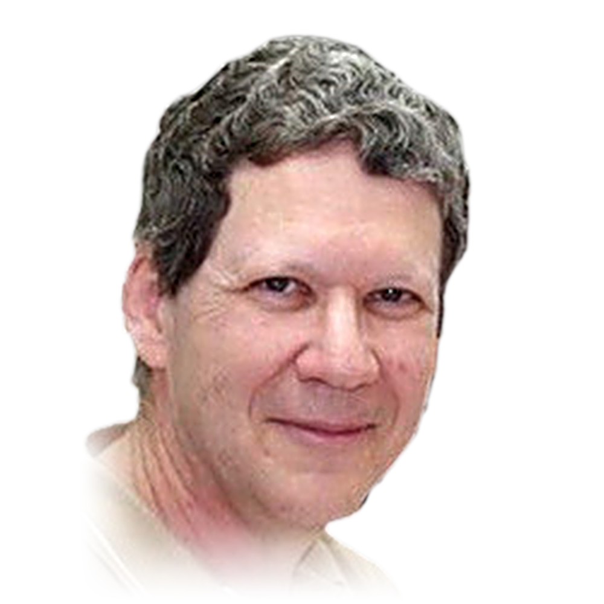

Sequences and the de Bruijn Graph: Properties, Constructions, and Applications
Elsevier, 2024
Professor, Technion
A pioneering coding theorist whose work on de Bruijn sequences and finite geometry has given the field new ways to construct codes.

Professor Tuvi Etzion has helped shape the study of digital sequences and error-correcting codes in finite geometry.
He earned his D.Sc. in Computer Science at the Technion in 1984 under Abraham Lempel. Their early work on de Bruijn sequences set the course for a research career spanning sequence design, perfect codes and network coding.
Etzion is an IEEE Life Fellow and gives the opening keynote at VinUniversity on 4 December. Technion profile
… and others in the full Technion supervision record.
Elsevier, 2024
World Scientific, 2022
The two honourees have written together on thermal-management codes, de Bruijn sequences and recovery sets, often with Han Mao Kiah, Alexander Vardy and Vũ Văn Khu.